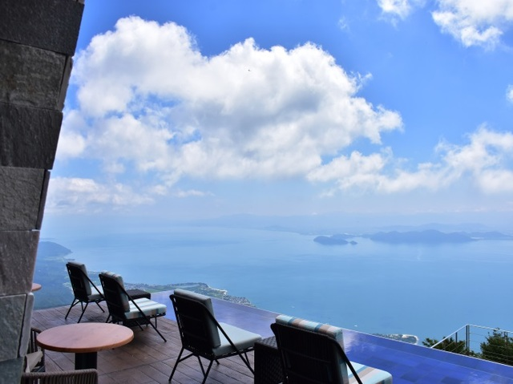
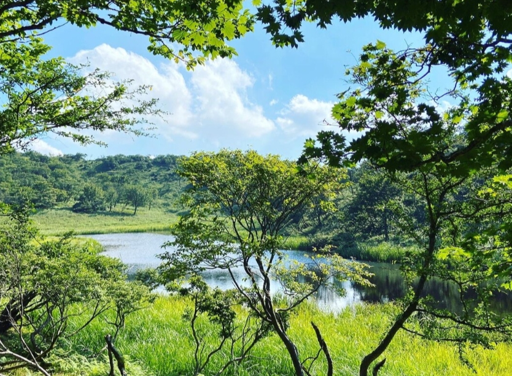
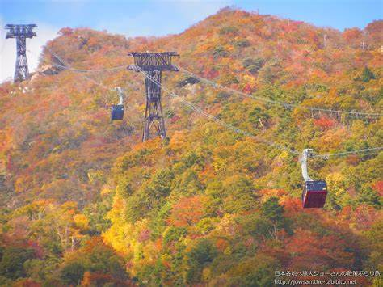
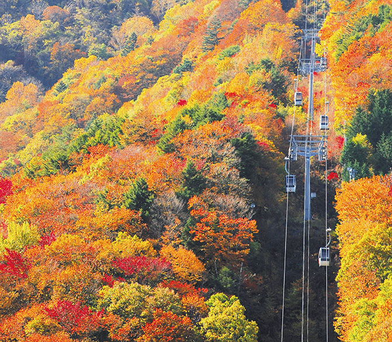
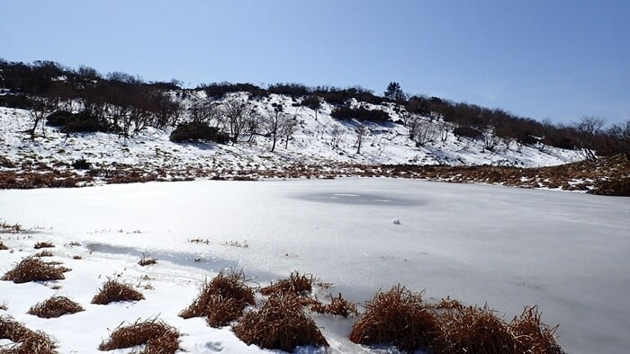

ローディング
びわ湖バレイの魅力紹介
1.びわ湖テラス
山の上から見る絶景
ロープウェイで山を登った先にあるびわ湖テラス。標高1108mの打見山から眺める一面に広がった琵琶湖はまさに絶景。テラスに座りながら、手に持った温かい飲み物を啜りながら眺める景色は、日常の喧騒を忘れさせ、心をリフレッシュさせてくれます。びわ湖テラスは、自然と触れ合い、心を豊かにする場所です。ぜひ一度訪れて、その魅力を体感してみてください。きっと、あなたもその美しさに魅了されることでしょう。

2.小女郎ヶ池

標高1060mにある秘境
ロープウェイの山頂駅から徒歩約１時間。まるで隠れた楽園のようにひっそりと小女郎ヶ池は佇んでいます。私がここに行ったときはようやく辿り着いたという達成感も相まってとても輝かしく見えました！また、名前の由来もなかなか興味深いものがあるので、気になった方は是非「小女郎ヶ池」と検索してみてください！
3.おすすめは秋と冬！秋は紅葉！冬はスキー




秋の魅力
秋のおすすめは何といっても紅葉!例年10月下旬頃から11月上旬にかけてカエデやミズナラなどの木々が色づき、茜色の美しい紅葉を琵琶湖とともに味わうことができます。ぜひ、びわ湖バレイの紅葉の美しさを、心ゆくまで堪能してください。
冬の魅力
冬のおすすめの一つ目は白銀の小女郎ヶ池です。別の季節に行くのもいいですが冬は全く別の景色を見ることができます。もう一つのおすすめはびわ湖バレイスキー場です。琵琶湖が見える最高の景色の中でウィンタースポーツを楽しみましょう。詳細を知りたい方は方は下記のスキー場公式サイトで調べてみてください。
びわ湖バレイ
〒520-0514
住所:滋賀県大津市木戸1547-1
TEL:077-592-1155